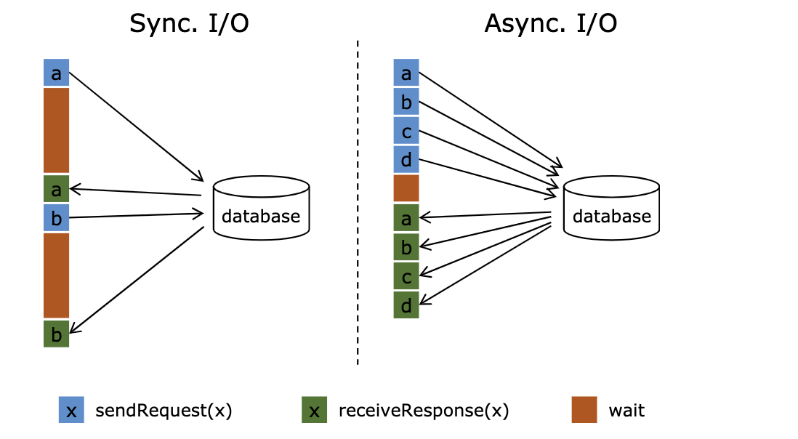
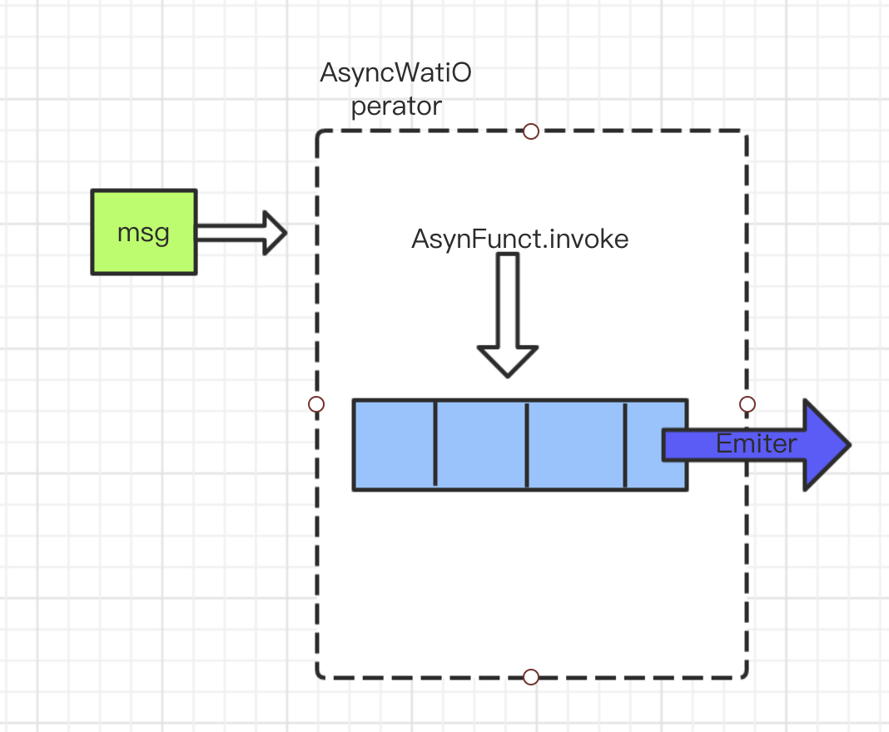
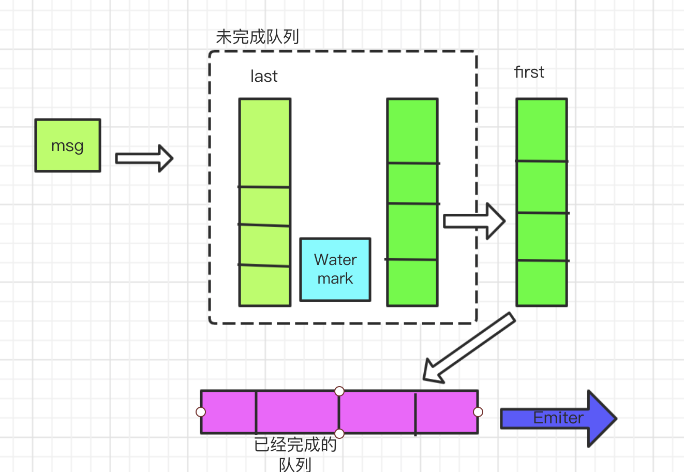
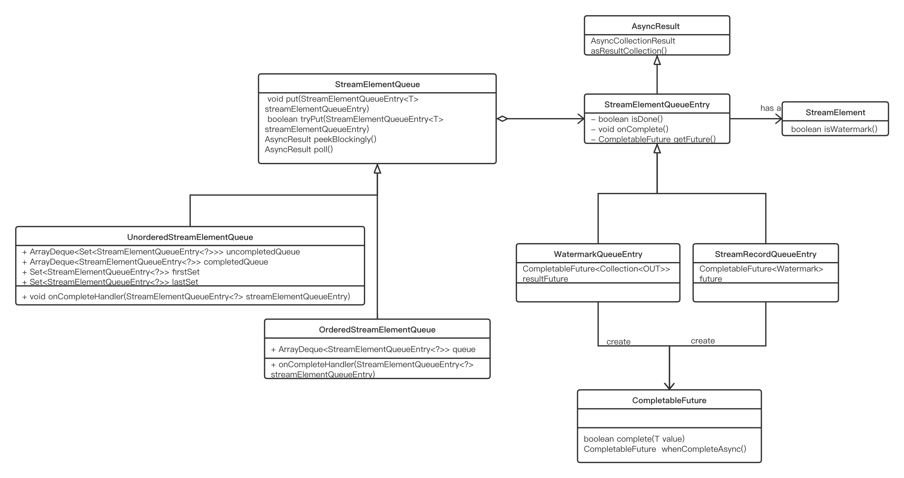

简介
从单一数据源过来之后，需要跟具体的某个数据源，或者维度信息就行一个join操作，或者其他操作，就会涉及到Flink 与外部系统的交互
。
但是在与外部系统交互的过程中，难免会遇到一些耗时比较久的操作，所以异步IO 就显得有必要了，用于提高整个系统的吞吐
如下，flink async io 的一个图

如果我们不是异步的话，就会一个一个的去等待，吞吐就会降低，如果使用 async io 那就不管其中任何一操作是否会好耕更多的时间
样例
// create input stream of an single integer DataStream<Integer> inputStream = env.addSource(new SimpleSource(maxCount)); // create async function, which will *wait* for a while to simulate the process of async i/o AsyncFunction<Integer, String> function = new SampleAsyncFunction(sleepFactor, failRatio, shutdownWaitTS); // add async operator to streaming job DataStream<String> result; if (ORDERED.equals(mode)) { result = AsyncDataStream.orderedWait( inputStream, function, timeout, TimeUnit.MILLISECONDS, 20).setParallelism(taskNum); } else { result = AsyncDataStream.unorderedWait( inputStream, function, timeout, TimeUnit.MILLISECONDS, 20).setParallelism(taskNum); } // add a reduce to get the sum of each keys. result.flatMap(new FlatMapFunction<String, Tuple2<String, Integer>>() { private static final long serialVersionUID = -938116068682344455L; @Override public void flatMap(String value, Collector<Tuple2<String, Integer>> out) throws Exception { out.collect(new Tuple2<>(value, 1)); } }).keyBy(0).sum(1).print()
|
private static class SampleAsyncFunction extends RichAsyncFunction<Integer, String> { public void asyncInvoke(final Integer input, final ResultFuture<String> resultFuture) { executorService.submit(() -> { // wait for while to simulate async operation here long sleep = (long) (ThreadLocalRandom.current().nextFloat() * sleepFactor); try { Thread.sleep(sleep); if (ThreadLocalRandom.current().nextFloat() < failRatio) { resultFuture.completeExceptionally(new Exception("wahahahaha...")); } else { resultFuture.complete( Collections.singletonList("key-" + (input % 10))); } } catch (InterruptedException e) { resultFuture.complete(new ArrayList<>(0)); } }); } }
|
整体的流程

Msg 通过 AsyncWaiterOperator 放入到queue 里面，然后在里面进行一个操作，完成过后通过Emiter 线程从队列里面获取结果
对于如果有watermark 这样语义下面同时还是unorder的，那我们需要保证watermark 的顺序，同时也要保证最大的一个吞吐
将watermark 和数据 进行一个隔离

在未完成的队列里里面其实一个有序队列，他们里面的数据通过wartermark 进行一个隔离，也即是未完成的队列里面存放的是一个set 集合，集合里面可以进行存放watermark 也可以进行存放element ,当遇到watermark 的时候，他需要单独的一个set，然后放置在
未完成的集合里面，当有新元素来的的时候放入到last 里面，first从未完成的队列里面获取元素，等到调用AsyncFunction comple 的是时候将first 让如到已完成队列里面，然后emiter 线程进行消费，first 可以是乱序的
###实现类图

入口AsyncDataStream的unorderedWait 方法
public static <IN, OUT> SingleOutputStreamOperator<OUT> unorderedWait( DataStream<IN> in, AsyncFunction<IN, OUT> func, long timeout, TimeUnit timeUnit, int capacity) { return addOperator(in, func, timeUnit.toMillis(timeout), capacity, OutputMode.UNORDERED); }
|
最后调用了addOperator 的方法
private static <IN, OUT> SingleOutputStreamOperator<OUT> addOperator( DataStream<IN> in, AsyncFunction<IN, OUT> func, long timeout, int bufSize, OutputMode mode) { TypeInformation<OUT> outTypeInfo = TypeExtractor.getUnaryOperatorReturnType( func, AsyncFunction.class, 0, 1, new int[]{1, 0}, in.getType(), Utils.getCallLocationName(), true); // create transform AsyncWaitOperator<IN, OUT> operator = new AsyncWaitOperator<>( in.getExecutionEnvironment().clean(func), timeout, bufSize, mode); return in.transform("async wait operator", outTypeInfo, operator);
|
最后通过 AsyncWaitOperator 进行一个数据处理
AsyncWaitOperator 是一个one input stream operator 所以可以直接processElement
public void processElement(StreamRecord<IN> element) throws Exception { final StreamRecordQueueEntry<OUT> streamRecordBufferEntry = new StreamRecordQueueEntry<>(element); if (timeout > 0L) { // register a timeout for this AsyncStreamRecordBufferEntry long timeoutTimestamp = timeout + getProcessingTimeService().getCurrentProcessingTime(); final ScheduledFuture<?> timerFuture = getProcessingTimeService().registerTimer( timeoutTimestamp, new ProcessingTimeCallback() { @Override public void onProcessingTime(long timestamp) throws Exception { userFunction.timeout(element.getValue(), streamRecordBufferEntry); } }); // Cancel the timer once we've completed the stream record buffer entry. This will remove // the register trigger task streamRecordBufferEntry.onComplete( (StreamElementQueueEntry<Collection<OUT>> value) -> { timerFuture.cancel(true); }, executor); } addAsyncBufferEntry(streamRecordBufferEntry); userFunction.asyncInvoke(element.getValue(), streamRecordBufferEntry); }
|
逻辑还是听清楚的，创建一个超时的time，如果超时了就行报错
streamRecordBufferEntry.onComplete 这里是一个重点
streamRecordBufferEntry.onComplete 里面如下
public void onComplete( final Consumer<StreamElementQueueEntry<T>> completeFunction, Executor executor) { final StreamElementQueueEntry<T> thisReference = this; getFuture().whenCompleteAsync( // call the complete function for normal completion as well as exceptional completion // see FLINK-6435 (value, throwable) -> completeFunction.accept(thisReference), executor); }
|
这里面的有一个 getFunture 方法，是返回个CompletableFuture ，当然 CompletableFuture 调用了compute 方法才会执行 whenCompleteAsync方法 也即是
当输入到达的时候这里其实么有真正的执行，可以认为这里 仅仅是注册了一个回调函数，会面会讲解回调函数什么时候会触发
注册完回调函数过后，调用addAsyncBufferEntry(streamRecordBufferEntry)
进行添加队列元素，我们分析无序队列，最后调用到了UnorderedStreamElementQueue 的 addEntry
private <T> void addEntry(StreamElementQueueEntry<T> streamElementQueueEntry) { assert(lock.isHeldByCurrentThread()); if (streamElementQueueEntry.isWatermark()) { lastSet = new HashSet<>(capacity); if (firstSet.isEmpty()) { firstSet.add(streamElementQueueEntry); } else { Set<StreamElementQueueEntry<?>> watermarkSet = new HashSet<>(1); watermarkSet.add(streamElementQueueEntry); uncompletedQueue.offer(watermarkSet); } uncompletedQueue.offer(lastSet); } else { lastSet.add(streamElementQueueEntry); } streamElementQueueEntry.onComplete( (StreamElementQueueEntry<T> value) -> { try { onCompleteHandler(value); } catch (InterruptedException e) { // The accept executor thread got interrupted. This is probably cause by // the shutdown of the executor. LOG.debug("AsyncBufferEntry could not be properly completed because the " + "executor thread has been interrupted.", e); } catch (Throwable t) { operatorActions.failOperator(new Exception("Could not complete the " + "stream element queue entry: " + value + '.', t)); } }, executor); numberEntries++; }
|
这里的逻辑也就是之前说的逻辑，如果是水位线，需要新建一个set用于存放watermark,然后添加到uncopmlete queue 里面，如果不是水位线，则将元素添加到lastSet 这里需要注意的是，遇到一个watermark 需要添加一个新的last set 到 uncomplete queue 里面，同时first的书 也是从uncomplete里面过去的，与uncomplte 不同的的是first first 里面是真正的数据，跟之前这里也有一个回调函数
异步调用完成
AsyncFunction 里面asyncInvoke 需要我们自己实现，数据完成的时候，会调用ResultFuture complete 方法
根据我们上面的类图 得知 最后调用了 StreamRecordQueueEntry
public void complete(Collection<OUT> result) { resultFuture.complete(result); }
|
这里的resultFuture 就是一个CompletableFuture 对象 ，此事我们的回调函数触发了
public void onComplete( final Consumer<StreamElementQueueEntry<T>> completeFunction, Executor executor) { final StreamElementQueueEntry<T> thisReference = this; getFuture().whenCompleteAsync( // call the complete function for normal completion as well as exceptional completion // see FLINK-6435 (value, throwable) -> completeFunction.accept(thisReference), executor); }
|
而触发的是completeFunction ，这个就会执行
UnorderQueue里面的 addEntry 的哪个回调代码
streamElementQueueEntry.onComplete( (StreamElementQueueEntry<T> value) -> { try { onCompleteHandler(value); } catch (InterruptedException e) { // The accept executor thread got interrupted. This is probably cause by // the shutdown of the executor. LOG.debug("AsyncBufferEntry could not be properly completed because the " + "executor thread has been interrupted.", e); } catch (Throwable t) { operatorActions.failOperator(new Exception("Could not complete the " + "stream element queue entry: " + value + '.', t)); } }, executor); numberEntries++;
|
最后调用了onCompleteHandler 方法
public void onCompleteHandler(StreamElementQueueEntry<?> streamElementQueueEntry) throws InterruptedException { lock.lockInterruptibly(); try { if (firstSet.remove(streamElementQueueEntry)) { completedQueue.offer(streamElementQueueEntry); while (firstSet.isEmpty() && firstSet != lastSet) { firstSet = uncompletedQueue.poll(); Iterator<StreamElementQueueEntry<?>> it = firstSet.iterator(); while (it.hasNext()) { StreamElementQueueEntry<?> bufferEntry = it.next(); if (bufferEntry.isDone()) { completedQueue.offer(bufferEntry); it.remove(); } } } LOG.debug("Signal unordered stream element queue has completed entries."); hasCompletedEntries.signalAll(); } } finally { lock.unlock(); } }
|
这里面的逻辑是，fist 里面的数据移除，同时在complete queue 里面添加完成的元素，最后发送信号 hasCompletedEntries.signalAll() 告诉emiter 线程曲消费数据
Emiter 线程代码
public void run() { try { while (running) { LOG.debug("Wait for next completed async stream element result."); AsyncResult streamElementEntry = streamElementQueue.peekBlockingly(); output(streamElementEntry); } } catch (InterruptedException e) { if (running) { operatorActions.failOperator(e); } else { // Thread got interrupted which means that it should shut down LOG.debug("Emitter thread got interrupted, shutting down."); } } catch (Throwable t) { operatorActions.failOperator(new Exception("AsyncWaitOperator's emitter caught an " + "unexpected throwable.", t)); } }
|
逻辑比较简单，即是区获取 queue 里面的数据，然后output到下游即可
总结
使用 队列的里面存放 数据集合（watermark 也是一个数据认为），进行通过watermark 进行区分
使用 first 和complte queue 进行一个数据与处理进行解耦
同时使用completefuture 的功能来达到一个异步变成的效果